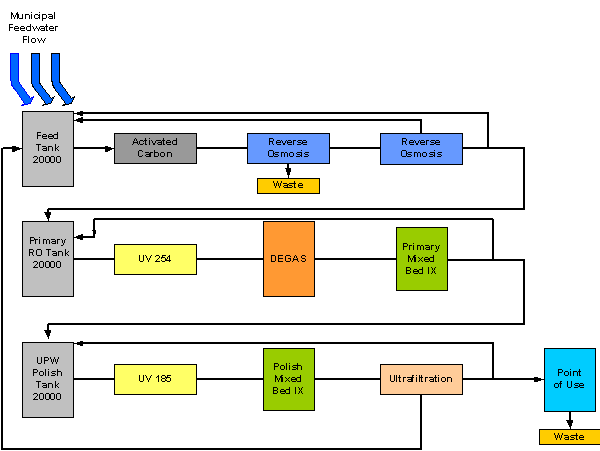
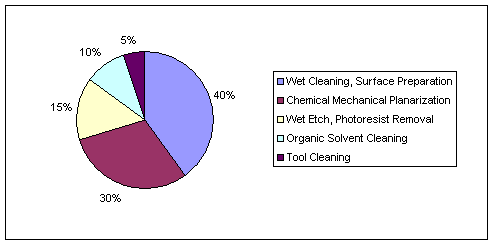

Ultrapure Water
|
Demand for ultrapure water has recently increased due to its application in making semiconductor wafers. These wafers must be rinsed with something that will leave no contaminants behind. Even the smallest residue would render the wafer ineffective and therefore useless. The table below compares the purity of drinking water to UPW. |
Table 3. Contaminant levels of Drinking Water vs. UPW
|
Water Quality Parameters |
Units |
Typical Municipal Water Supply |
Typical UPW |
|
Resistivity |
MW-cm |
0.004 |
18 |
|
pH |
units |
8.8 |
6 |
|
Total Organic Carbon |
ppb |
3500 |
<2 |
|
Ammonium |
ppb |
300 |
0.1 |
|
Calcium |
ppb |
2200 |
0.05 |
|
Magnesium |
ppb |
4000 |
1 |
|
Potassium (ICP) |
ppb |
4500 |
1 |
|
Sodium (ICP) |
ppb |
29,000 |
0.02 |
|
Silica (SIO2) |
ppb |
47,480 |
10 |
|
Chloride |
ppb |
15,000 |
0.02 |
|
Fluoride |
ppb |
740 |
<1 |
|
Nitrates |
ppb |
500 |
<1 |
|
Phosphates |
ppb |
50 |
<1 |
|
Sulfates |
ppb |
42,000 |
<1 |
|
Other ions |
ppb |
|
<set limit |
|
Resistivity is a common quantity used to measure the purity of water. In UPW, nearly all of the ions are removed, making the electrical conduction almost zero. Resistivity is the inverse of conductivity, which makes the resitivity a relatively large number. Making water ultrapure is a complicated and involved process. There are many steps, and at each step, there are variations that can be make to suit the specific needs of the user. Making ultrapure water is also a very resource and energy expensive process. The details of each component of the UPW process will be discussed in the individual modules. However, here is a brief overview of the process. |

Figure 1. UPW Process Diagram
Potable water begins by entering the feed tank where it waits until there is room for it to move along. The water then passes through activated carbon, which removes suspended organics and chlorine as well as oxidants such as hydrogen peroxide. The water then proceeds to the first of what could be many reverse osmosis filters. Reverse osmosis uses filters that are semi-permeable. The solvent is able to pass through the filter whereas the solute is not. Generally the reject from the first pass is removed from the system while the reject from the second is recycled back into the system. Next the water is hit with ultraviolet (UV) rays with a wavelength measuring 254nm. Different wavelengths affect the water in different ways. At 254nm, bacterial disinfection and ozone (O3) decomposition occur. The water then moves onto degasification. Here volatile organic compounds are removed. Carbon dioxide, for example, must be removed because it reduces ion exchange resin capacity. The next process is ion exchange. In ion exchange, both cations (+) and anions (-) are removed in an absorption/desorption process. Mixing these two processes increases quality, which is known as a mixed bed process. The water is then hit with UV rays at a wavelength of 185nm. At this wavelength, there is total organic carbon oxidation. In this oxidation, more ions are made, so the water passes through another ion exchange. Finally, the water enters an ultrafiltration column. This process is similar to reverse osmosis in that the water passes through a membrane. The membrane removes colloidal silica, endotoxins, pyrogens and particles generated by other system components upstream. The water is finally ready for use. |


Figure 2. Breakdown of UPW Use
|
Used UPW can either be disposed of or recycled. Although still uncommon, recycling the water is becoming the trend. Not all of the water entering the system makes it to the end. Only about 60% [1000 / 1708 = 58.5%] of the water that enters is used. For example, if 1708 gallons leave the feed tank, all 1708 will come out of the activated carbon, but only approximately 1332 gallons will continue to the second RO tank and 376 gallons will be sent out as waste. Not all the water will make it past the second RO tank. Approximately 132 gallons will be sent back to the feed tank while 1200 gallons will continue. This water will move through the rest of the process until it reaches ultrafiltration at which point 80 gallons will be sent back to start the process all over. Additional water is sent back to the polish tank to be run through the last few steps again. Of the initial 1708 gallons of potable water, only 1000 gallons of UPW are made. |